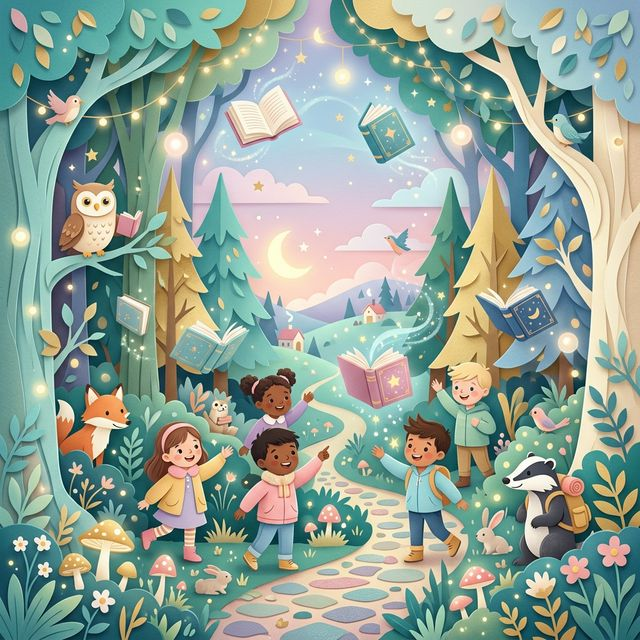

The journey of every story begins not with a word, but with a feeling. When I first started thinking about Leo's adventure, I knew it had to feel "at-home" yet "expansive". The backyard was our anchor, but our imagination was the ocean.
Kids experience the world through raw emotion and exaggerated scale. A simple rose bush isn't just a plant; it's a towering forest. A puddle is a vast sea.
"The biggest jungles are often found in the smallest places. You just have to know how to look."
Originally, the characters were far more realistic. Below is a sketch from the very first sessions where we played with the idea of a botanical jungle. Eventually, we moved towards a softer, more dreamlike style to match the age group's sensory experience.

What I learned through this process is that kids don't need things to be perfectly rendered. They need things to feel true. If a leaf feels soft and alive, it doesn't matter if it's neon purple. In fact, if it's neon purple, they might love it even more.
In our next post, we'll talk about the rhythmic writing process and how to read to your children with intent to create lasting nighttime memories.